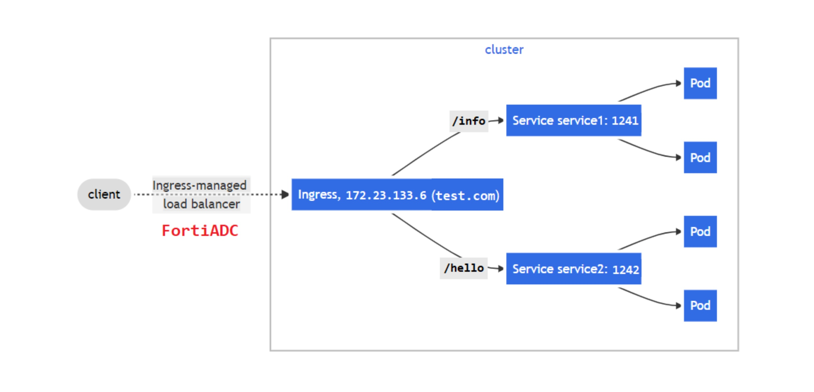

The following is an example of a simple-fanout Ingress implementation. In this example, the client can access service1 with the URL https://fadcdemo.apps-adc.fortidemo.net/info and access service2 with the URL https://fadcdemo.apps-adc.fortidemo.net/hello.

Kubernetes Service (sise) defines a logical set of Pods with the label run=sise. Sise is a simple HTTP web server. Service (nginx-demo) defines a logical set of Pods with the label run=nginx-demo. Nginx is also a simple HTTP web server. Services are deployed under the namespace default.